의공기사 (2013-03-10 기출문제)
1과목: 기초의학 및 의공학
1. 다음 그림에서 초음파 혈류계를 이용하여 혈류의 속도를 측정하는 메커니즘에 대해 잘못 설명한 것은?
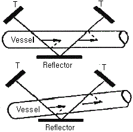
- 두 개의 초음파 송수신 장치(T)와 한 개의 반사판(Reflector)으로 구성되어 있다.
- 초음파가 반사판을 통과한 후 들어오는 각도를 계측한다.
- 한 쪽의 초음파 송신장치를 출발한 초음파가 혈관과 반사판을 지나 수신 장치에 들어올 때까지의 진행시간을 계측한다.
- 그림과 같은 초음파 혈류계를 사용하여 혈류량을 계측할 때는 프로브 내부를 통과하는 혈류의 단면에 대한 대략적인 정보가 필요하다.
(정답률: 85%)

2. 다음 중 압전 센서가 사용되는 장치가 아닌 것은?
- 초음파 영상장치
- 초음파 쇄석기
- 호흡 감시장치
- 심전도계
(정답률: 70%)
3. 의용생체 전극 설명 중 이식형 전극의 특징이 아닌 것은?
- 인체에 삽입되는 전극이다.
- 장기간 측정용으로 사용 가능하다.
- 전극의 신호는 무선방식으로만 전달된다.
- 인체 내부 장기의 전위 측정이나 전기 자극을 목적으로 한다.
(정답률: 89%)
4. 세포외액의 Ca2+ 조절과 관련이 없는 기관은?
- 근육
- 위장관
- 뼈
- 신장
(정답률: 54%)
5. 다음 중 근육내에 존재하는 직접적, 간접적 에너지원이 아닌 것은?
- 당원(Glycogen)
- 아세틸콜린(Acetylcholine)
- 크레아틴 인산염(CP : Creatine phosphate)
- 아데노신 3인산염(ATP : Adenosine triphosphate)
(정답률: 84%)
6. 다음 중 변위를 측정하는 센서는?
- 서미스터
- 선형 가동 차동 변환기
- 열전쌍
- 표면플라즈몬 공명 센서
(정답률: 85%)
7. 심장 전기 자극의 이동경로로 옳은 것은?
- 동방결절(SA node) → 심방(atria) → 방실결절(AV node) → 심실(ventricle) → 히스속(bundle of His) → 푸르키니에 섬유(Purkinje Fiber)
- 동방결절(SA node) → 심방(atria) → 방실결절(AV node) → 히스속(bundle of His) → 푸르키니에 섬유(Purkinje Fiber) → 심실(ventricle)
- 방실결절(AV node) → 심방(atria) → 동방결절(SA node) → 히스속(bundle of His) → 푸르키니에 섬유(Purkinje Fiber) → 심실(ventricle)
- 방실결절(AV node) → 동방결절(SA node) → 심방(atria) → 히스속(bundle of His) → 푸르키니에 섬유(Purkinje Fiber) → 심실(ventricle)
(정답률: 85%)
8. 흡착전극(suction electrode)에 대한 설명 중 틀린 것은?
- 동작음(motion artifact)이 비교적 크다.
- 탈부착 작업이 간단하다.
- 피부 표면에 부착하는 전극이다.
- 장시간 사용에 적합하다.
(정답률: 90%)
9. 심전도의 표준사지유도 중에서, 왼발 전극에 양극을, 오른손 전극에 음극을 주고 두 지점간의 전위차를 기록하는 유도는?
- 제1유도(Lead Ⅰ)
- 제2유도(Lead Ⅱ)
- 제3유도(Lead Ⅲ)
- aVF 유도
(정답률: 85%)
10. 근육수축의 가장 간단한 형태로서 단일자극에 대한 단일수축을 무엇이라 하는가?
- 경축(contracture)
- 강축(tetanus)
- 연축(twitch)
- 긴장(tonus)
(정답률: 79%)
11. 전극과 전해질에서 이온의 집적(accumulation)으로 인하여 기전력이 발생하는데, 이것이 발생하기 가장 쉬운 곳은 금속과 용액의 접촉면이며, 대단히 제멋대로인 현상이라 그때마다 정도가 달라 생체 전위의 측정에서 일정한 결과를 얻을 수 없는 경우가 많다. 이를 무엇이라 하는가?
- 변위전류(displacement current)
- 반전지 전위(half-cell potential)
- 과전위(overpotential)
- 분극(polarization)
(정답률: 72%)
12. 평형 휘스톤 브리지(Balanced wheatstone bridge)회로에 대한 설명으로 틀린 것은?
- 미지의 저항과 기준 저항과의 저항값의 차를 구하는 용도로 사용된다.
- 측정대상 저항과 회로의 저항 3개로, 총 4개의 저항으로 구성된다.
- 회로를 구성하는 3개의 저항은 기준 저항과 같은 저항값을 갖도록 구성된다.
- 측정 전압은 측정 대상 저항의 저항값에 반비례한다.
(정답률: 80%)
13. 단일 이온통로의 전류를 기록하는 방법은?
- 전압 클램핑
- 전류 클램핑
- 패치 클램핑
- 단락전류측정법
(정답률: 54%)
14. Ag-AgCl(은-염화은) 전극의 특성이 아닌 것은?
- 분극 전극이다.
- 전해질을 필요로 한다.
- 저항성 특성이 나타난다.
- 저주파 신호측정에 적합하다.
(정답률: 88%)
15. 반도체의 접합부에 빛이 조사되면 전자와 정공의 흐름이 생겨 기전력이 발생하는 현상은?
- 광도전 효과
- 광전자 방출 효과
- 집전효과
- 광기전력 효과
(정답률: 90%)
16. 체온조절을 담당하는 신경계의 부위는?
- 대뇌
- 소뇌
- 시상하부
- 측두엽
(정답률: 93%)
17. 신경전달물질의 기전에 대한 설명으로 틀린 것은?
- 시냅스 전 뉴런에 존재하고 시냅스 후 뉴런이나 효과기에 작용을 나타내야 한다.
- 시냅스 전 뉴런에서 합성되어야 한다.
- 시냅스 후 뉴런 내부에서 신경전달물질이 제거된다.
- 외부에서 동일한 물질을 투여하면 원래의 신경전달물질과 동일한 효과를 나타내야 한다.
(정답률: 78%)
18. 방사능 붕괴 시 나타나는 현상과 거리가 먼 것은?
- alpha decay
- x-ray decay
- positron decay
- gamma decay
(정답률: 80%)
19. 피부의 가장 외부에 위치하며, 케라틴(Keratin)이라는 단백질로 구성되어 있어 전극과 피부표면의 등가회로에서 가장 높은 저항을 가지고 있고, 전극 부착시 제거하여 측정하도록 하는 것은?
- 진피층
- 각질층
- 기저층
- 과립층
(정답률: 91%)
20. ECG 의 측정방법 중 팔다리에서 측정하는 신호가 아닌 것은?
- LEAD 1
- V6
- aVF
- aVR
(정답률: 91%)
2과목: 의용전자공학
21. 마이크로프로세서 내에 있는 레지스터로서 프로그램의 다음 명령어가 들어있는 주소를 저장하는 곳은?
- 명령레지스터
- 번지레지스터
- 프로그램카운터
- 누산기
(정답률: 79%)
22. 이상적인 연산증폭기가 이상적인 차동증폭기로 동작하기 위한 CMRR은?
- 0
- 1
- β
- ∞
(정답률: 79%)
23. 생체신호 측정시 고려사항이 아닌 것은?
- 인체에 주는 위험 피해를 최소화 하도록 한다.
- 계측은 온도, 습도, 소음, 멸균 등과는 무관하므로 신경 쓰지 않아도 된다.
- 측정신호외의 잡음을 제거해야 한다.
- 정확한 센서 부착위치와 계측기의 조작방법을 습득해야 한다.
(정답률: 92%)
24. 다음 중 이상적인 연산 증폭기의 특징으로 잘못 표현된 것은?
- 입력 바이어스 전류, 오프셋 전류, 오프셋 전압이 0 이다.
- 주파수 대역폭이 직류에서부터 무한대까지이다.
- 전압 이득(AV)이 무한대이다.
- 출력 임피던스는 무한대이다.
(정답률: 80%)
25. PN 접합 반도체이며 불순물 농도가 가장 높은 것은?
- 점접촉 다이오드
- 정류 다이오드
- 제너 다이오드
- 쇼트키 다이오드
(정답률: 69%)
26. 인덕턴스가 20[mH]인 코일에 흐르는 전류가 0.2[sec] 동안에 3[A]가 변화하였다면 코일에 유기되는 기전력은 몇 [V]인가?
- 0.2
- 0.3
- 0.4
- 0.5
(정답률: 70%)
27. 생체전기 신호에 해당되지 않는 것은?
- 심전도
- 안구전도
- 뇌전도
- 심음도
(정답률: 81%)
28. 심전도 같은 생체계측시스템에서 장비 자체의 성능을 바꾸어 출력에 간접적으로 영향을 주는 원하지 않는 입력을 무엇이라 하는가?
- 원하는 입력
- 간섭 입력
- 반대 입력
- 변형 입력
(정답률: 80%)
29. 10진수 23과 -46을 2의 보수 표현 방법에 이해 8bit로 표현한 것은?
- 10010111, 01101001
- 00010111, 11010010
- 00110111, 11001001
- 10110111, 01001001
(정답률: 75%)
30. 다음 ∆-결선회로에서 Rab = 1Ω, Rbc = 2Ω, Rca = 3Ω으로 주어질 때, 등가회로인 Y-결선회로 Rb의 저항값은 약 몇 [Ω]인가?
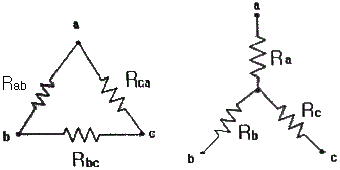
- 0.1
- 0.3
- 0.5
- 0.7
(정답률: 59%)
31. 심전도 단극 흉부 유도법에서 유도 전극의 부착 위치가 틀린 것은?
- V1 : 제4늑간 흉골 우측 가장자리
- V2 : 제4늑간 흉골 좌측 가장자리
- V3 : V2와 V4의 중간점
- V4 : V1과 같은 높이에서 좌전액와선상
(정답률: 79%)
32. 참값과 측정된 값과의 차이를 참값으로 나눈 것으로 보통 퍼센트(%)로 표현하는 것은?
- 선택도
- 정확도
- 정밀도
- 해상도
(정답률: 89%)
33. 직경이 5×10-3m인 혈관의 혈류가 0.1m/s로 흐르고 있다. 이 혈류 직각으로 3×1-3의 자장이 걸려 있다. 전자유량계의 전극을 혈과에 부착했을 때 유기되는 전압은? (단, 전극의 부착방향과 혈류 방향 및 자속의 방향은 서로 직각이다.)
- 0.1μV
- 0.15μV
- 1.5μV
- 15μV
(정답률: 62%)
34. 파형에 관한 설명으로 틀린 것은?
- 정현파의 평균값은 정현반파의 2배이다.
- 평균값에 대한 실효값의 비율을 파고율이라고 한다.
- 구형파는 최대값과 실효값 그리고 평균값이 모두 같다.
- 주파수와 주기는 서로 반비례한다.
(정답률: 81%)
35. 생체계측시에 증폭기의 신호 출력을 측정하였더니 0.5⑤ Vrms 이고, 신호를 제거하고 잡음을 측정하였더니 50.5 ㎶rms 인 경우 S/N 비는 몇 [dB] 인가?
- 10[dB]
- 40[dB]
- 60[dB]
- 80[dB]
(정답률: 71%)
36. 면적 S[m2], 극판거리 d[m]인 평행판 콘덴서에 비유전율 εs의 유전체를 채운 경우 정전용량[F]은? (단, ε0는 진공중의 유전율이다.)
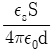
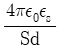
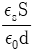
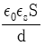
(정답률: 70%)
37. 배전압 정류회로의 특징으로 틀린 것은?
- 승압용 변압기가 필요하지 않다.
- 고전압용으로 사용한다.
- 용량이 작은 커패시터를 사용한다.
- 저전류 용도로 사용한다.
(정답률: 79%)
38. 불대수의 연산으로 틀린 것은?
- A + 0 = 0
- A + 1 = 1
- A · 1 = A
- A · 0 = 0
(정답률: 88%)
39. 하틀리(Hartley) 발진에서 궤환(feedback) 요소는?
- 용량
- 코일
- 트렌지스터
- 저항
(정답률: 57%)
40. 마이크로컴퓨터의 입출력 시스템에서 인터페이스회로의 기본적인 기능에 해당되지 않는 것은?
- 데이터형식의 변환
- 입출력 장치의 상태조사
- 전송의 동기 제어
- 신호의 레벨 제어
(정답률: 65%)
3과목: 의료안전·법규 및 정보
41. 인간의 전문성을 요구하는 특정 응용분야에 관한 전문가의 지식을 지식베이스에 저장하고 추론기관을 이용하여 문제에 적용하여 해결책을 제시하는 시스템은?
- 인공지능 시스템
- 전문가 시스템
- 신경회로망 시스템
- 퍼지 시스템
(정답률: 84%)
42. 다음 중 의료가스의 종류가 아닌 것은?
- 질소
- 헬륨
- 일산화탄소
- 산소
(정답률: 85%)
43. 데이터베이스를 구성하는 개체, 속성, 관계와 데이터의 조작 또는 이들 데이터 값이 갖는 제약 조건에 관한 정의를 기술한 것은?
- 데이터베이스 정규화
- 데이터베이스 관리자
- 데이터베이스관리시스템
- 스키마
(정답률: 69%)
44. 의료기기법령상 의료기기를 규정에 따라 재심사 신청 시 신청서 제출 대상이 다른 것은?
- 1등급 의료기기
- 2등급 의료기기
- 3등급 의료기기
- 4등급 의료기기
(정답률: 83%)
45. 병원정보시스템(HIS)에 관한 설명으로 옳은 것은?
- 국내 병원의 HIS는 ISO프로토콜을 사용한다.
- 의료장비에서 나오는 영상의 DICOM header는 환자의 자세한 사항을 포함한다.
- HIS는 DICOM 규격에 따라 이미지 데이터를 저장, 관리한다.
- HIS의 인터페이스로 HL7-DICOM을 사용하는 것이 좋다.
(정답률: 50%)
46. 1991년 말 세계 최초로 FULL PACS을 구축한 병원은?
- 삼성의료원
- 메이요클리닉
- 메사추세스 종합병원
- 매디간 육군병원
(정답률: 60%)
47. 현수지지특성이 마모, 녹, 재료의 노화나 경시변화에 의해 손상될 우려가 없는 경우, 모든 현수지지부품의 안전율 기준은?
- 안전율을 2 이상으로 할 것
- 안전율을 4 이상으로 할 것
- 안전율을 5 이상으로 할 것
- 안전율을 8 이상으로 할 것
(정답률: 74%)
48. 전자의무기록(EMR)의 개념으로 틀린 것은?
- 역학 및 임상의학 연구 수행의 핵심적 기반
- 임상 경험과 의학 지식 축적의 보고
- 환자의 임상진료와 관리에 관한 모든 정보의 집합체
- 환자의 특성과 검사자료를 이용하여 진단과 치료방침을 제시
(정답률: 66%)
49. 데이터베이스의 정의로 옳지 않은 것은?
- 통합된 데이터
- 공유 데이터
- 분산된 데이터
- 저장된 데이터
(정답률: 80%)
50. 의료기기법령상 의료기기위원회에 대한 설명으로 틀린 것은?(관련 규정 개정전 문제로 여기서는 기존 정답인 3번을 누르면 정답 처리됩니다. 자세한 내용은 해설을 참고하세요.)
- 위원장은 보건복지부차관이 한다.
- 50인 이상 100인 이하의 위원으로 한다.
- 위원회의 위원은 식품의약품안전청장이 임명한다.
- 위원의 임기는 2년으로 한다.
(정답률: 40%)
51. 의료기기법령상 의료기기의 수리업자가 준수하여야 할 사항이 아닌 것은?
- 허가를 받거나 신고한 내용과 다르게 변조하여 의료기기를 수리하지 말 것
- 의료기기를 수리한 경우에는 상호를 해당 의료기기의 용기에 기재할 것
- 의료기기의 수리를 의뢰한 자에 대하여 수리내역을 문서로 통보할 것
- 수리 후 적합한 경우에만 검사필증을 붙일 것
(정답률: 79%)
52. 의료폐기물 전용용기에 관한 설명으로 옳은 것은?
- 상자형 용기의 고조는 이중구조로 해야 한다.
- 의료폐기물의 전용용기는 재질에 따라 재사용 할 수 있다.
- 의료폐기물의 종류별 전용용기의 색상은 폐기물 종류에 따라 다르다.
- 봉투용 용기에는 의료폐기물을 그 용량의 80%이상이 되도록 넣으면 된다.
(정답률: 53%)
53. 의료법상 의료인의 실태와 취업상황 등의 신고 기준으로 옳은 것은?
- 최초로 면허를 받은 후부터 1년마다
- 최초로 면허를 받은 후부터 3년마다
- 면허 경신일로부터 1년마다
- 면허 경신일로부터 3년마다
(정답률: 66%)
54. PACS에서 사용하는 서로 다른 의료영상 장비들에서 나오는 다양한 영상형태를 실시간 교환하기 위한 표준 프로토콜은?
- HL7
- KS
- ANSI
- DICOM
(정답률: 80%)
55. 의료가스를 공급하는 경우 치료 서비스 조건에 적합하도록 설계해야 하는데 적합한 장소가 아닌 것은?
- 환자 휴게실
- 분만실
- 미숙아실
- 마취실
(정답률: 89%)
56. 모든 장비 또는 주변의 금속부분을 상호 결합하여 각각의 장비 또는 시스템간의 전위차를 해소하기 위한 접지방식은?
- 바닥도선 접지
- 등전위 접지
- 보호 접지
- 잡음방지용 접지
(정답률: 84%)
57. 의료정보시스템에서 소프트웨어 애플리케이션 간 정보가 호환될 수 있도록 이기종 컴퓨터시스템 및 데이터베이스 사이에 의료정보를 전달하기 위한 국제 프로토콜은?
- hl7
- DICOM
- ISO
- EDI
(정답률: 72%)
58. 환자에게 열을 주는 것을 의도하지 않는 기기 장착부의 표면온도는 최대 몇 도를 초과하면 안 되는가?
- 30℃
- 36℃
- 38℃
- 41℃
(정답률: 87%)
59. 의료법상 의료인에 대한 설명으로 옳지 않은 것은?
- 의료인의 의료 업무에 필요한 기구, 약품, 그 밖의 재료는 압류하지 못하다.
- 의료인의 의료행위에 필요한 기구, 약품 그 밖의 재료를 상황에 따라 공급받을 권리가 있다.
- 의료인의 진료나 조산 요청을 받으면 정당한 사유없이 거부하지 못한다.
- 의료인은 응급환자에게 관련 법률에 따라 최선의 처치를 하여야 한다.
(정답률: 60%)
60. 전자파에 의한 잡음의 종류와 그 발생 원인의 연결이 틀린 것은?
- 저주파 잡음 - 형광등
- 충격파 잡음 - MRI
- 고주파 잡음 - Surgical Laser
- 자기잡음 - Motor
(정답률: 78%)
4과목: 의료기기
61. aVR, aVL, aVF 등으로 표기되는 생체 신호와 측정방법이 맞게 짝지어진 것은?
- 안전도, 표준사지유도
- 심전도, 증폭사지유도
- 심전도, 흉부유도
- 안전도, 흉부유도
(정답률: 77%)
62. 간헐적 강제 환기에 대한 설명으로 옳지 않은 것은?
- 기계적 호흡수를 줄이면서 weaning과정을 가속화한다.
- 스스로의 호흡량을 점차 늘려가면서 호흡전체를 감당한다.
- 환기 효과를 위해 마비나 진정제를 투여한다.
- 인공호흡기를 완전 끄기 전에 활용한다.
(정답률: 81%)
63. 제세동의 성공에 관여하는 요인 중 하나가 경흉저항이다. 다음 중 경흉저항에 관여하는 인자로 가장 부적합한 것은?
- 전극의 크기
- 전극-피부 접촉면
- 전극의 모양
- 두 전극 사이의 거리
(정답률: 85%)
64. 양전자방출단층촬영장치(PET)의 구성요소 중 소멸방사선의 위치정보 수집을 위한 장치는?
- 광전자증배관
- 동시계수회로
- 섬광체
- 조준기
(정답률: 70%)
65. 알콜, 에틸린그리콜 등에 활성분자 색소를 균일하게 녹인 매질을 활용한 레이저의 명치은?
- 기체레이저
- 고체레이저
- 액체레이저
- 반도체레이저
(정답률: 86%)
66. 다음 중 인큐베이터에서 일어나는 현상이 아닌 것은?
- 증발
- 전도
- 복사
- 흡수
(정답률: 60%)
67. 환자감시장치에서 혈중산소포화농도(SpO2)에 대한 설명으로 틀린 것은?
- 적외선 빛과 빨간색 빛의 총합비교를 측정하여 값을 산출한다.
- 방출된 빛은 손가락 내의 혈관을 통해 수광부를 통해 검출된다.
- 수광부에서는 LED 발광을 통해 자외선과 빨간색 빛을 동시에 내보낸다.
- 산소와 결합한 헤모글로빈은 적외선을, 그렇지 않은 헤모글로빈은 빨간색 빛을 더 흡수하는 성질을 갖고 있다.
(정답률: 81%)
68. 방사선은 파동형태와 입자형태로 나눌 수 있다. 다음 방사선 중 깊은 부위에 있는 종양치료에 사용되는 것은?
- α(alpha) 선
- β(beta) 선
- γ(gamma) 선
- 중성자 선
(정답률: 84%)
69. 다음 중 MRI 영상 변수가 아닌 것은?
- 전자밀도
- 수소밀도
- 스핀격자완화시간(T1)
- 스핀스핀완화시간(T2)
(정답률: 70%)
70. 핵의학 영상 장치에서 트랜지스터나 진공관을 이용할 때보다 훨씬 잡음이 적으므로 미약한 빛을 검출할 때 사용되는 것은?
- 가이거-뮐러 카운터
- Nal 섬광 검출기
- 광전자증배관
- 시준기
(정답률: 66%)
71. 임상화학기기인 분광광도계의 측정원리는?
- 비어의 법칙
- 훅의 법칙
- 홈즈의 법칙
- 쿨롱의 법칙
(정답률: 74%)
72. 극초단파 치료기의 치료적 효과가 아닌 것은?
- 유해성 자극 전달의 억제
- 혈류량 증진
- 섬유성 교원조직의 신장력 증가
- 관절강직의 현저한 감소
(정답률: 39%)
73. 컴퓨터 적외선 열 영상 진단기의 특징으로 틀린 것은?
- 방사선 방식이 아니므로 방사선 노출이 없다.
- 인체에 무해한 적외선을 이용하므로 통증이 없다.
- 환자가 감지할 수 없는 통증을 천연색으로 촬영하며 시각화한다.
- 히스테리 신경성과 실제 통증과의 구별이 불가능 하다.
(정답률: 72%)
74. X-선관에서 촬영대상체까지의 거리가 50cm일 때, X-선 영상의 확대율을 4배로 하려면 X-선관에서 X-선 감지면(detector)까지의 거리는?
- 50cm
- 100cm
- 150cm
- 200cm
(정답률: 72%)
75. 인공 페이스메이커는 심실 및 심방 박동의 조절 여부와 조절 방법에 따라 여러 가지로 나뉜다. 인공 페이스메이커의 형태와 그 설명을 짝지은 것 중 옳은 것은?
- VVI : 전극이 심실에 위치해서 심실박동을 감지하고 조율하는 형태로 가장 간단하고 안전성이 높다.
- VDD : 심장 재동기화 치료라고 하며 전극선이 3개 있다
- DDD : 전극선 1개를 이용하여 심실의 움직임만 조율한다.
- AAI : 심방에 전기자극을 주지 않고 심방의 움직임에 따라 심실의 움직임을 조율한다.
(정답률: 64%)
76. 다음 설명의 ( )에 알맞은 것은?
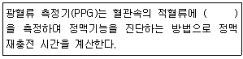
- 자외선 흡수량
- 적외선 흡수량
- 자외선 방출량
- 감마선 흡수량
(정답률: 81%)
77. X-선은 물질을 통과하면서 물질을 이루고 있는 원자들과 여러 가지 상호작용을 하게 되는데 그 중에서도 진단용 방사선기기에 사용되는 X-선의 에너지 대역에서는 주로 어떤 현상이 일어나는가?
- 광전효과, 미에 산란
- 미에 산란, 레일리 산란
- 광전효과, 콤프턴 산란
- 콤프턴 산란, 레일리 산란
(정답률: 86%)
78. 충격파 발생방식 중 금속막을 전자석으로 진동시켜 이때 발생되는 압력파를 집속하는 방식을 무엇이라 하는가?
- Spark Gap 방식
- Piezoeletric 방식
- Electromagnetic 방식
- Micro Explosion 방식
(정답률: 60%)
79. 다음 중 청력검사를 위한 자극음으로 적당하지 않은것은?
- 연속음
- 단락음
- 진폭변조음
- 주파수변조음
(정답률: 70%)
80. 현재 가장 많이 사용되고 있는 다음의 단계형 카테터에서 명칭이 옳지 않은 것은?
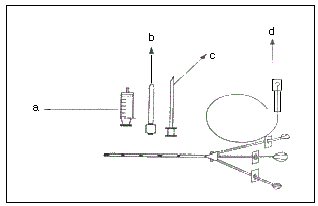
- a : 실린더
- b : 축소기
- c : 가이드 바늘
- d : 가이드 와이어
(정답률: 85%)
5과목: 의용기계공학
81. 생체재료의 인장시험을 통해 얻을 수 있는 기계적 특성값이 아닌 것은?
- 항복 강도
- 최대 연실율
- 극한 인장 강도
- 굴곡 강도
(정답률: 59%)
82. 나사의 리드가 L 이고 유효 지름이 d 일 때 리드각은?
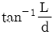
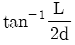
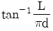
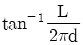
(정답률: 76%)
83. 활보장이 60cm이고 분속수가 60회라면 보행속도는?
- 0.3m/s
- 0.4m/s
- 0.5m/s
- 0.6m/s
(정답률: 45%)
84. 다음 방사선 단위 중 방사선이 어느 정도 흡수되었는가를 알고자 할 때 사용하는 것은?
- Rad
- R(Roentgen)
- Gy(Gray)
- Sv(Sivert)
(정답률: 74%)
85. 생 다음 중 동력전달 기계요소가 아닌 것은?
- 기어
- 리벳
- 벨트
- 체인
(정답률: 83%)
86. 외전(abduction)에 대한 설명 중 옳은 것은?
- 두 분절 사이의 각도가 감소하는 운동이다.
- 인체의 중심으로부터 서로 멀어지는 운동이다.
- 정중면으로 가까이 하는 운동이다.
- 시상면에서 관찰된다.
(정답률: 87%)
87. 생체조직의 점탄성을 설명하는 스프링과 대쉬폿의 특징 중 옳지 않은 것은?
- 스프링과 대쉬폿에서 외력이 사라지면 변형이 완전히 회복된다.
- 스프링과 대쉬폿이 직렬로 연결된 모델은 맥스웰 모델이다.
- 스프링과 대쉬폿이 병렬로 연결괸 모뎃은 캘빈-보이트 모델이다.
- 스프링은 탄성고체, 대쉬폿은 점성유체의 특성을 나타낸다.
(정답률: 69%)
88. 인장 시험을 통해서 다음과 같은 응력-변형률 곡선을 얻었다. 그림에 나타난 재료 중에서 취성(brittleness)이 가장 큰 재료는?
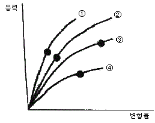
- ㉠
- ㉡
- ㉢
- ㉣
(정답률: 69%)
89. 다음 중 의료용 재료 중 세라믹 재료가 가지는 특성으로 틀린 것은?
- 압축 강도가 강하다.
- 성형 및 가공이 용이하다.
- 불활성이다.
- 생체적합성이 우수하다.
(정답률: 78%)
90. 기어에서 압력각을 크게 하면 발생되는 효과로 옳은 것은?
- 언더컷이 심해진다.
- 물림률이 증가한다.
- 미끄럼률이 감소한다.
- 베어링에 걸리는 하중이 감소한다.
(정답률: 72%)
91. 다음 중 저주파 영역에서 혈장, 전혈(헤마토크릿 40%) 및 적혈구의 전기 저항률이 높은 순서부터 나열된 것은?
- 적혈구 ＞ 전혈 ＞ 혈장
- 혈장 ＞ 적혈구 ＞ 전혈
- 전혈 ＞ 혈장 ＞ 적혈구
- 혈장 ＞ 전혈 ＞ 적혈구
(정답률: 68%)
92. 혈관 활장용 스텐트처럼 생체재료를 사용하여 심혈관용 임플란트를 제조하려한다. 이러한 임플란트가 인체에 사용되어 성공적으로 목적을 달성하기 위해서 필요한 특성이 아닌 것은?
- 생체적합성
- 혈액적합성
- 생체기능성
- 생산가능성
(정답률: 80%)
93. 다음 중 생체재료의 범위를 가장 올바르게 정의한 것은?
- 살아있는 생체에 직접 접촉하는 재료
- 생체의 조직이나 장기의 기능을 보완하는 재료
- 생체의 조직이나 장기의 기능을 대신하는 재료
- 살아있는 생체에 직접 또는 간접적으로 접촉하여 생체의 조직이나 장기 또는 생체 기능의 일부 혹은 전체를 대신하거나 보완해 주는데 사용되는 모든 재료
(정답률: 91%)
94. 방사선의 피폭정도에 따른 신체적 영향으로 틀린 것은?
- 50~250mSv : 혈액 속의 임파구에 염색체 이상 발생
- 10000 : 탈수, 영양보급 곤란
- 1~10Sv : 조혈기관의 장해
- 10~15Sv : 위장관의 내점막 손상
(정답률: 72%)
95. 혈관의 직경이 1/2 이 되면, 혈관에 흐르는 유량은 어떻게 되는가? (단, 혈류는 정상적으로 흐르고 있다.)
- 4배로 많아진다.
- 변함이 없다.
- 1/4로 줄어든다.
- 1/16로 줄어든다.
(정답률: 79%)
96. 기계적 강도는 낮으나 부식저항이 탁월하고 전기전도성이 좋아서 페이스메이커의 전극 등에 널리 사용 되는 것은?
- Ta
- Co
- Pt
- Cr
(정답률: 86%)
97. 다음 중 자세조절에 관한 감각기전이 아닌 것은?
- 시각
- 체성감각
- 청각
- 전정계로부터의 말초입력
(정답률: 81%)
98. 강하고 투명한 장점이 있고, 열적, 기계적 특성이 뛰어나 심혈관계 보조장기에 널리 응용되고 있는 것은?
- 폴리아세탈(Polyacetal)
- 폴리스티렌(Polystylene)
- 폴리카보네이트(Polycarbonate)
- 폴리액틱에이시드(Polylacticacid)
(정답률: 62%)
99. 생체조직의 상처회복반응을 순서대로 표현한 것은?
- 염증-지혈-초기재생-재형성
- 초기재생-지혈-염증-재형성
- 초기재생-염증-재형성-지혈
- 지혈-염증-초기재생-재형성
(정답률: 59%)
100. 몸무게가 50Kg인 철수가 바닥면적이 100cm2인 운동화를 신고 한쪽 발로 서있을 때 발바닥에 발생하는 압력은 몇 N/m2 인가? (단, 중력가속도는 10m/s2으로 계산한다.)
- 1 × 104 N/m2
- 2.5 × 104 N/m2
- 5 × 104 N/m2
- 5 × 106 N/m2
(정답률: 71%)